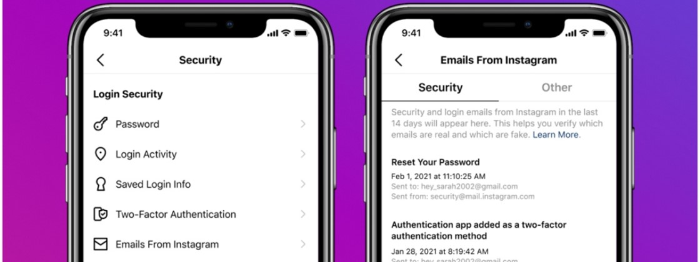

WhatsApp agora funciona em até 4 dispositivos ao mesmo tempo
postado 20 março 2022
Nesta quarta-feira (14), o WhatsApp finalmente liberou uma função muito esperada pelos usuários. A empresa anunciou o novo recurso multiplataforma do app, que permite utilizar o mensageiro em até quatro dispositivos simultaneamente sem precisar do celular . O smartphone não precisa estar carregado ou conectado à internet. O usuário poderá conectar a sua conta do WhatsApp em qualquer aparelho, de forma independente. Mas, no primeiro uso, ainda será necessário usar o celular para confirmar o número de telefone no app. Além disso, os dispositivos serão desconectados caso o usuário não use o WhatsApp no celular por mais de 14 dias.
Leia maisInstagram ganha nova ferramenta de verificação de segurança
postado 10 março 2022 
Com o objetivo de fechar o cerco aos invasores, tornando as contas mais protegidas, o Instagram lançou nesta terça-feira (13) um recurso denominado “Verificação de Segurança” . A novidade é direcionada principalmente às pessoas que já tiveram o perfil hackeado, orientando-as sobre como se precaver.
Segundo a rede social, a nova ferramenta entrará em ação assim que o dono de uma conta comprometida anteriormente fizer login, solicitando-lhe seguir alguns passos para verificar se está tudo certo. Analisar as atividades, as informações do perfil e revisar os contatos para recuperação da conta são algumas das orientações que aparecerão.
A companhia também anunciou que passará a permitir o uso do WhatsApp para obter uma camada extra de proteção com a autenticação de dois fatores. Este recurso será disponibilizado em alguns países nas próximas semanas, possibilitando receber um código de verificação diretamente no app de mensagens para confirmar a autenticidade do login.